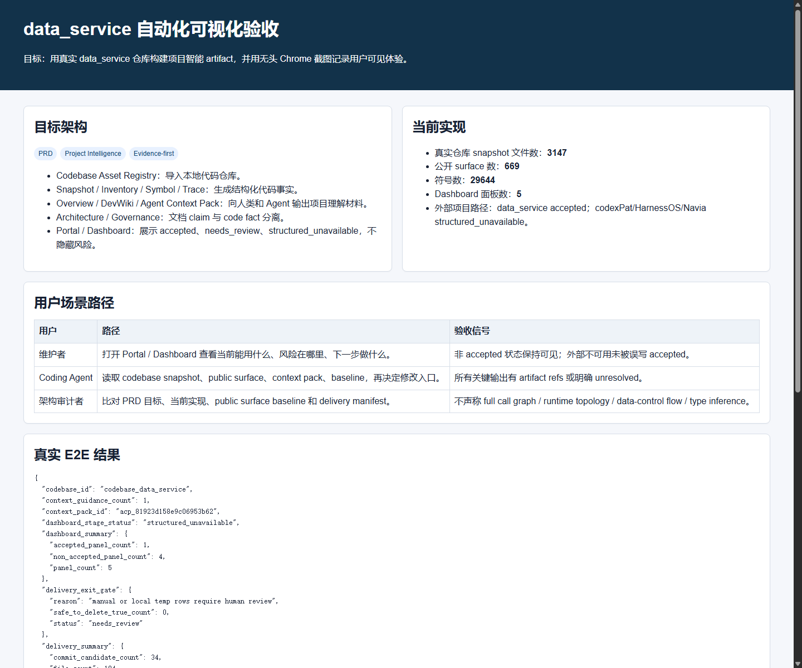
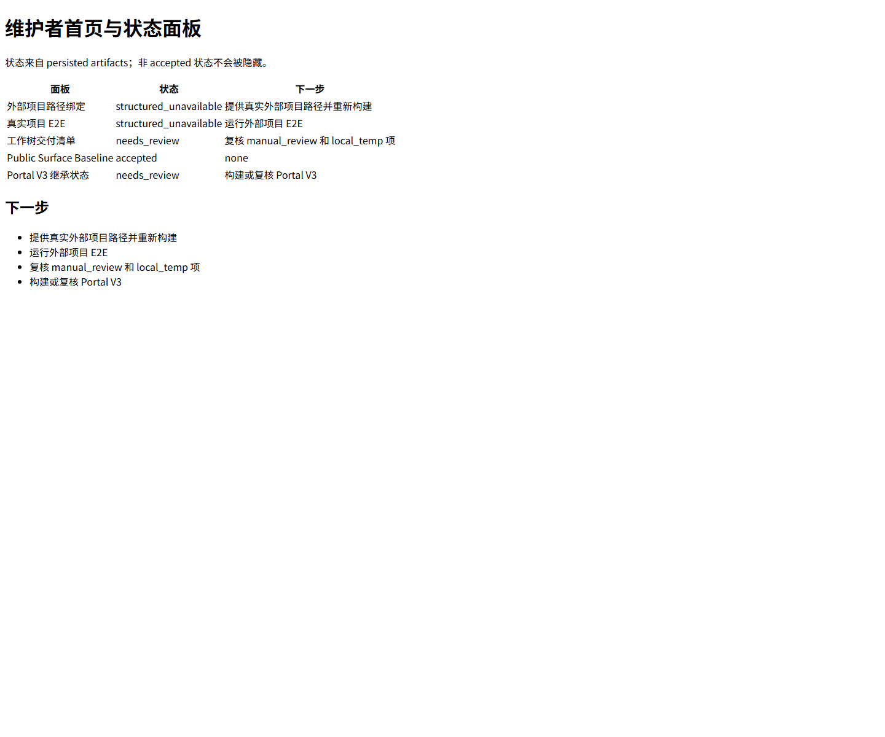
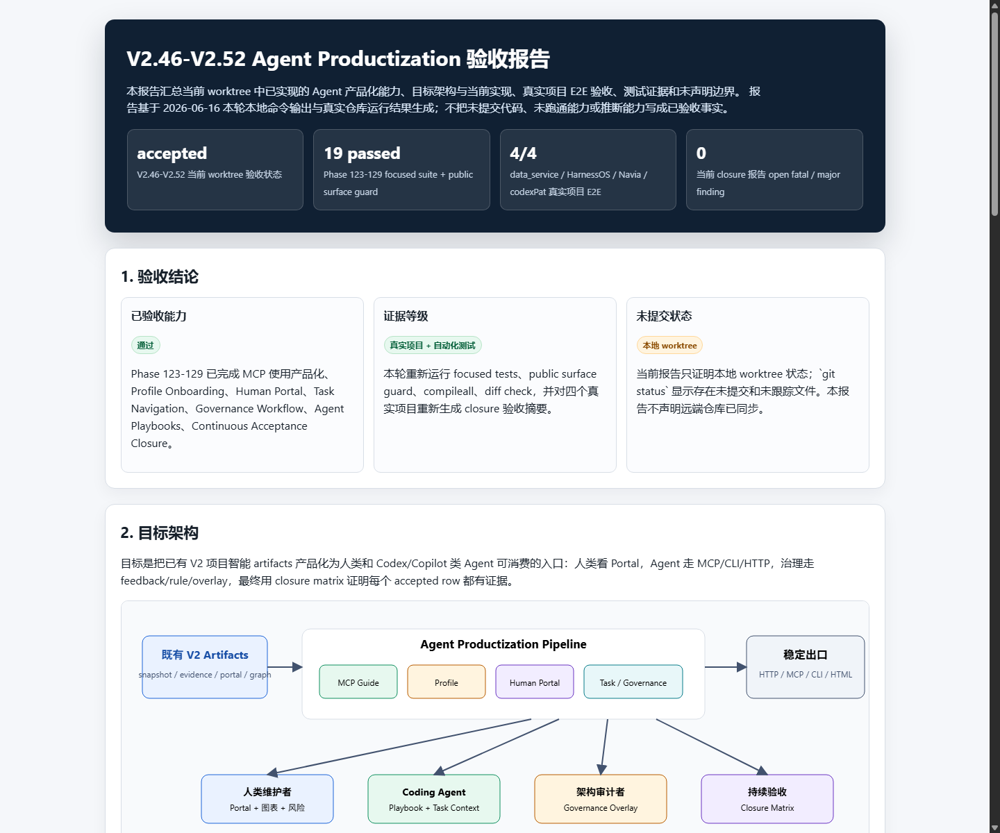
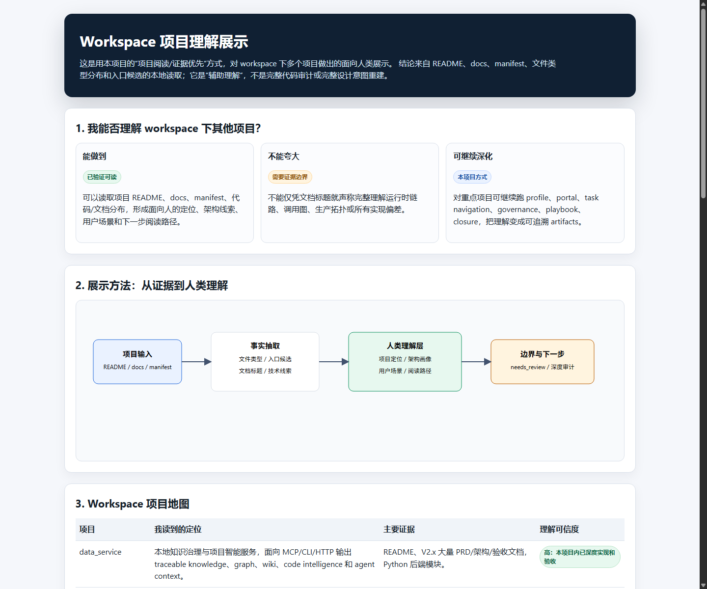

目标架构与当前实现
展示 PRD 目标架构、当前真实 artifact 指标和用户场景路径。

本报告使用真实 data_service 仓库构建项目智能 artifact，并用 Windows Chrome headless 自动截图。未打开可见浏览器窗口，未进行焦点抢占。
通过：自动化可视化展示与截图证据生成成功。 本结论仅覆盖当前本机环境、当前工作树、真实 data_service 仓库和本报告列出的场景；不声明外部项目完整验收，不声明 full call graph、runtime topology、data/control flow 或 type inference。
| 项目 | 结果 |
|---|---|
| 浏览器 | Windows Chrome headless；Linux Playwright Chromium 因缺少系统库 libnspr4.so 未使用。 |
| 截图模式 | 命令行 --headless=new --screenshot，没有弹窗、没有焦点抢占。 |
| 截图校验 | 5 张截图均为 1440x1200，PIL 非空校验通过。 |
| 数据来源 | 真实导入当前 data_service 仓库并构建 snapshot、inventory、symbols、trace、overview、context pack、Portal、dashboard。 |
Codebase AssetEvidence TraceAgent ContextPortal
codexPat、HarnessOS、Navia 在本机没有提供真实路径，因此保持 structured_unavailable，没有计入 accepted。structured_unavailable，原因是外部项目仍有非 accepted 状态。needs_review，因为存在 manual/local temp 审查项；safe_to_delete_true_count=0。| 项目 | 状态 |
|---|---|
| HarnessOS | structured_unavailable |
| Navia | structured_unavailable |
| codexPat | structured_unavailable |
| data_service | accepted |
展示 PRD 目标架构、当前真实 artifact 指标和用户场景路径。

展示 persisted artifacts 汇总页面，未隐藏非 accepted 状态。

展示 path binding、E2E、delivery、baseline、Portal 继承状态。

展示 V2.46-V2.52 已有 HTML 验收页面。

展示工作区项目面向人类的可视化样例。

{
"codebase_id": "codebase_data_service",
"context_guidance_count": 1,
"context_pack_id": "acp_81923d158e9c06953b62",
"dashboard_stage_status": "structured_unavailable",
"dashboard_summary": {
"accepted_panel_count": 1,
"non_accepted_panel_count": 4,
"panel_count": 5
},
"delivery_exit_gate": {
"reason": "manual or local temp rows require human review",
"safe_to_delete_true_count": 0,
"status": "needs_review"
},
"delivery_summary": {
"commit_candidate_count": 34,
"file_count": 194,
"generated_evidence_count": 134,
"local_temp_count": 1,
"manual_review_count": 25,
"safe_to_delete_true_count": 0
},
"external_e2e_summary": {
"accepted_count": 1,
"data_service_status": "accepted",
"mock_only_accepted_count": 0,
"non_accepted_count": 3,
"project_count": 4,
"unavailable_accepted_count": 0
},
"inventory_surface_count": 669,
"overview_has_summary": true,
"path_binding_statuses": {
"HarnessOS": "structured_unavailable",
"Navia": "structured_unavailable",
"codexPat": "structured_unavailable",
"data_service": "accepted"
},
"portal_summary": {
"non_accepted_panel_count": 6,
"panel_count": 6,
"raw_mermaid_visible": false
},
"snapshot_file_count": 3147,
"snapshot_id": "snap_28f8f72c5820780f946f",
"surface_baseline_summary": {
"breaking_count": 0,
"compatible_count": 4,
"needs_review_count": 0,
"surface_count": 4
},
"symbol_count": 29644,
"trace_surface_count": 669
}
截图证据目录：docs/V2.x/visual_acceptance_assets/
本报告：docs/V2.x/V2_VISUAL_AUTOMATED_ACCEPTANCE_REPORT.html